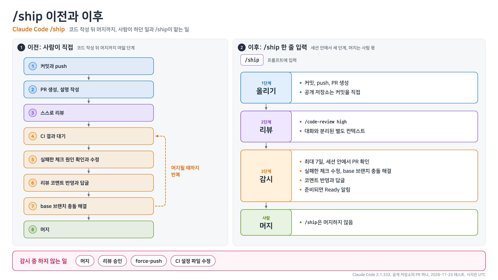
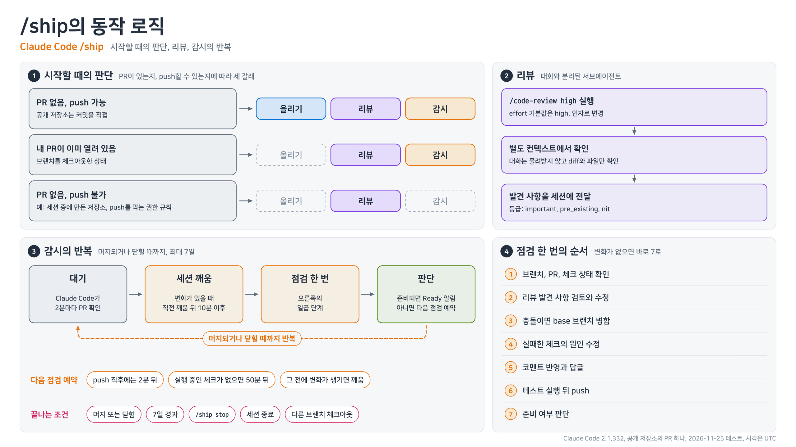
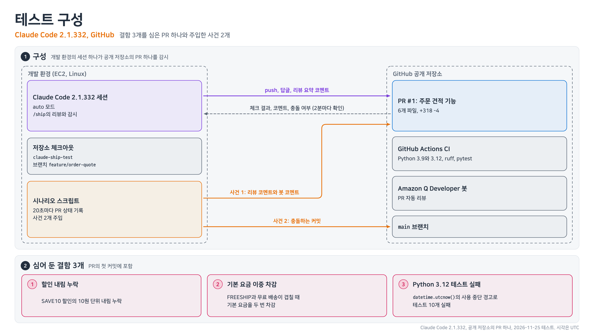
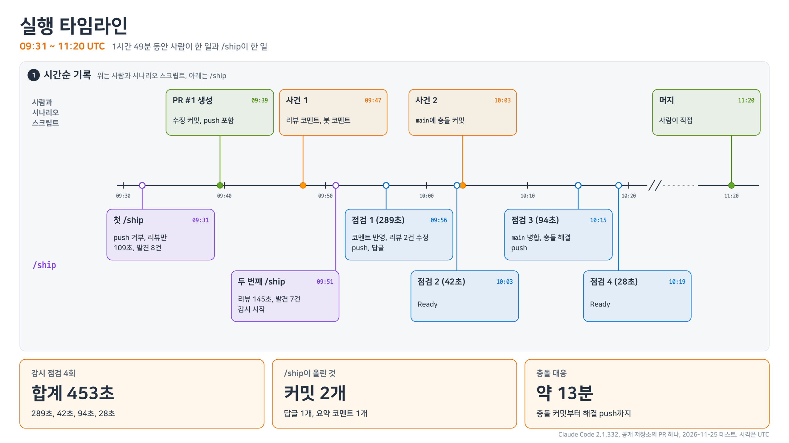
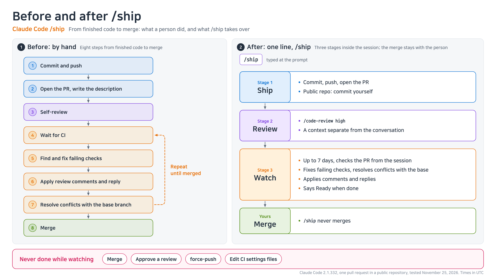
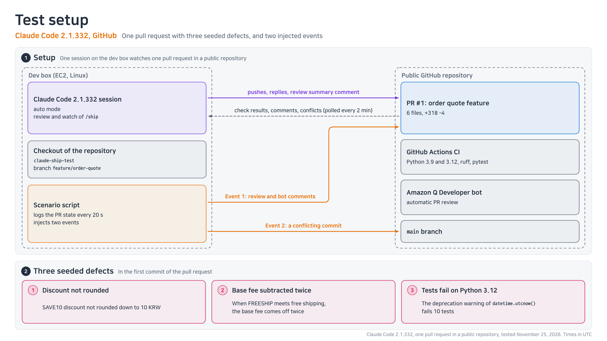
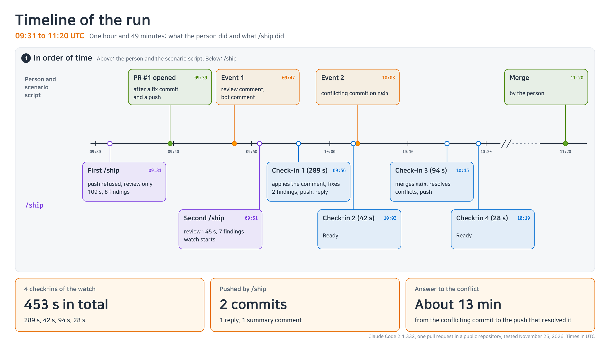

Claude Code /shipClaude Code /ship
Claude Code의 /ship 명령이 PR을 머지할 수 있는 상태까지 실제로 가져가는지 테스트 해 보았습니다. 결함 3개를 심은 PR 하나에서 리뷰는 세 결함을 모두 찾았고 감시는 리뷰 코멘트 1건과 base 브랜치 충돌 1건을 사람의 개입 없이 처리했습니다. 하지만 감시는 세션 안에서 돌기 때문에 점검 4회에 캐시 읽기 토큰 약 1,740만 개가 들었고 세션 중에 만든 저장소에서는 push와 PR 생성을 직접 해야 했습니다.I tested whether the Claude Code /ship command really takes a pull request to the point where it can be merged. On one pull request with three seeded defects, the review found all three, and the watch handled one review comment and one conflict with the base branch without anyone stepping in. But the watch runs inside the session, so four check-ins read about 17.4 million tokens from the cache, and in a repository created during the session I had to push and open the pull request myself.
- 리뷰: 109초에 발견 8건, 심어 둔 결함 3개를 모두 포함. 리뷰는 대화를 물려받지 않는 별도 컨텍스트에서 실행Review: 8 findings in 109 seconds, all three seeded defects among them. The review runs in a context of its own that does not inherit the conversation
- 감시: 점검 4회, 합계 453초.
/ship이 올린 것은 커밋 2개, 답글 1개, 리뷰 요약 코멘트 1개Watch: 4 check-ins, 453 seconds in total./shippushed 2 commits, 1 reply and 1 review summary comment - 충돌 대응:
main에 충돌 커밋이 들어온 뒤 해결 커밋을 push하기까지 약 13분Conflict: about 13 minutes from the conflicting commit onmainto the push that resolved it - 비용: 점검 4회의 캐시 읽기 약 1,740만 토큰. API 호출마다 세션 컨텍스트 43만~48만 토큰을 다시 읽음Cost: about 17.4 million cache-read tokens for the 4 check-ins. Every API call reads the session's context again, 430 to 480 thousand tokens here
- 머지:
/ship은 머지하지 않음. 준비됐다는 알림을 받고 직접 머지Merge:/shipnever merges. It says the pull request is ready, and the merge is yours
코드를 다 쓴 뒤에 남는 일
코드를 다 쓴 뒤에도 머지까지는 커밋, PR 생성, 리뷰, 실패한 CI 수정, 코멘트 답변, 충돌 해결이 남습니다. Claude Code v2.1.330부터 사용할 수 있는 /ship 명령은 이 일을 세션 안에서 맡고 머지만 사람에게 남깁니다.
결함 3개를 일부러 심은 PR 하나로 테스트했습니다. 리뷰는 109초 만에 세 결함을 모두 찾았습니다. 감시는 PR을 네 번 점검해(합계 453초) 리뷰 코멘트 1건을 반영하고 충돌 1건을 해결했습니다. PR을 연 뒤 머지할 때까지 제가 코드에 손댄 일은 없습니다.

/ship 이전과 이후. 왼쪽 단계의 색은 그 일을 넘겨받는 오른쪽 단계의 색과 같습니다이 글에 자주 나오는 말은 세 가지입니다. 리뷰는 변경을 한 번 읽고 문제를 찾는 일입니다. 감시(watch)는 PR이 머지될 때까지 세션이 PR을 지켜보며 실패한 체크, 충돌, 코멘트를 처리하는 일입니다. 점검은 감시 중에 PR을 한 번 살펴보고 필요한 수정을 하는 한 차례를 말합니다.
잡지에 글을 싣는 과정에 비유하면 이해하기 쉽습니다. 원고를 넘기면 교정자가 한 번 읽고 문제를 표시합니다. 이것이 리뷰입니다. 그 뒤에는 담당 편집자가 교정 내용을 반영하고 문의에 답하고 같은 호에 실리는 다른 원고와 겹치는 곳을 맞춥니다. 이것이 감시입니다. 인쇄를 넘기는 마지막 서명은 저자가 합니다. 비유와 달리 교정자와 편집자는 모두 저자의 이름으로 일합니다. /ship이 올리는 커밋과 코멘트는 내 GitHub 계정으로 남습니다.
이름이 비슷한 기능이 둘 있습니다. /steward는 이미 열린 PR에 리뷰 없이 감시만 시작하는 명령입니다. Claude Ship은 Team과 Enterprise 플랜의 조직이 저장소에 설정하는 에이전트 묶음이고 /ship은 내 세션에서 내 사용량으로 실행되는 명령입니다.
01
동작 방식
/ship을 입력하면 세 가지 일이 순서대로 일어납니다. 올릴 수 있으면 PR을 열고 변경을 리뷰한 뒤 머지될 때까지 감시합니다. 그림 2는 그 과정의 판단과 반복을 한 장에 정리한 그림입니다.

/ship의 동작 로직. 공식 문서와 세션 기록에 남은 감시 지시문을 기준으로 그렸습니다시작할 때의 판단
가장 먼저 PR을 올릴 수 있는지 봅니다. PR이 없고 push할 수 있으면 브랜치를 push해 PR을 엽니다. 비공개 저장소에서는 커밋하지 않은 변경도 대신 커밋하고 공개 저장소에서는 커밋을 직접 해 두어야 합니다. 내 PR이 이미 열려 있으면 바로 리뷰로 넘어갑니다. push할 수 없으면 리뷰만 하고 끝나며 감시는 시작하지 않습니다. 이번 테스트의 첫 실행이 마지막 경우였습니다.
리뷰와 감시
리뷰는 /code-review를 high 수준으로 실행합니다. 대화와 분리된 서브에이전트가 diff와 저장소 파일을 읽고 발견 사항을 세션에 돌려줍니다.
감시는 그 뒤에 시작하는 반복입니다. Claude Code가 2분마다 PR을 확인하다가 체크 결과나 새 코멘트 같은 변화가 생기면 세션을 깨웁니다. 깨어난 세션은 점검을 한 번 합니다. 리뷰 발견 사항, 충돌, 실패한 체크, 코멘트 순서로 처리하고 수정이 있으면 테스트를 실행한 뒤 push합니다. 체크가 통과하고 답할 코멘트가 없으면 준비됐다고 알리고 아니면 다음 점검을 예약합니다. 이 반복은 PR이 머지되거나 닫힐 때까지, 길게는 7일 동안 이어집니다.
02
테스트 구성
EC2 개발 환경의 Claude Code 세션 하나와 GitHub 공개 저장소 하나로 구성했습니다. 문서의 요구 사항은 Claude Code v2.1.330 이상, GitHub CLI 2.63 이상, git 2.38 이상입니다. 사람 없이 진행하려면 권한 모드를 auto로 두라고 안내하므로 세션은 auto 모드로 실행했습니다.
$ claude --version
2.1.332 (Claude Code)
$ gh --version
gh version 2.88.1 (2026-03-12)
$ git --version
git version 2.50.1
저장소는 택배 요금을 계산하는 작은 Python 패키지입니다. 주문 견적 기능을 추가하는 변경을 브랜치 feature/order-quote에 커밋하면서 결함 3개를 심었습니다. 함께 넣은 테스트 36개는 Python 3.9에서 모두 통과합니다. 결함 두 개는 테스트로 드러나지 않고 하나는 Python 3.12로 실행하는 CI에서만 드러납니다.
PR이 열리면 시나리오 스크립트가 20초마다 PR 상태를 기록하다가 사건 두 개를 넣습니다. 사건 1은 쿠폰 코드를 대소문자와 공백에 관계없이 인식해 달라는 리뷰 코멘트와 봇 코멘트 하나입니다. 사건 2는 PR이 합쳐질 브랜치인 main에 요금표를 바꾸는 커밋을 올려 만든 충돌입니다. 아래는 스크립트가 남긴 로그에서 사건 줄만 추린 것입니다.
2026-11-25T09:39:45Z PR found: #1 head=feature/order-quote created=2026-11-25T09:39:34Z title=Add order quotes with coupons and free shipping
2026-11-25T09:47:48Z E1 review comment posted by the owner: id=4693071500 src/shipcalc/quote.py:63 on d518a83
2026-11-25T09:47:51Z E1 comment-bot workflow started (comment by github-actions[bot])
2026-11-25T10:03:35Z E2 pushed to main: 2e7b8ae Revise the 20 kg fee and add a 25 kg tier
2026-11-25T10:20:16Z READY the scenario is done; merging or closing #1 is left to the owner
2026-11-25T11:20:59Z FINAL pull request #1 is MERGED결과를 읽기 전에 알아 둘 조건이 두 가지 있습니다. 공개 저장소라서 변경은 제가 미리 커밋했습니다. 결함과 시나리오를 준비한 세션에서 그대로 /ship을 입력했기 때문에, 감시를 수행한 세션은 어떤 사건이 올지 대화로 알고 있었습니다. 리뷰는 대화를 물려받지 않으므로 결함을 모르는 상태에서 실행됐습니다.
03
리뷰 결과
리뷰는 두 번 실행됐고 심어 둔 결함 3개는 첫 번째 리뷰에서 모두 나왔습니다.
첫 실행에서 거부된 push와 리뷰 8건
브랜치를 체크아웃한 상태에서 /ship을 입력하자 push 대신 다음 안내가 나왔습니다.
> /ship
Nothing pushed. /ship only pushes from a repository that was there before this session started, and it can't tell that this one was. Push the branch and open a pull request yourself, then run /ship again.이 저장소는 세션을 시작한 뒤에 git init으로 만들었습니다. 안내문대로라면 /ship은 세션 시작 전부터 있던 저장소에서만 push합니다. 문제 해결 문서의 표에는 이 경우가 없습니다. push는 하지 않았지만 리뷰는 실행됐고 109초 뒤에 발견 사항 8건이 돌아왔습니다.
| 위치 | 발견 내용 | 등급 | 심은 결함 |
|---|---|---|---|
quote.py:87 | FREESHIP 쿠폰과 무료 배송이 겹치면 기본 요금을 두 번 빼서 배송비가 음수 | important | 예 |
quote.py:91 | datetime.utcnow()의 사용 중단 경고로 Python 3.12에서 테스트 10개 실패 | important | 예 |
quote.py:56 | SAVE10 할인액이 10원 단위로 내림되지 않음 | important | 예 |
quote.py:80 | 무게 합의 부동소수점 오차로 구간 경계의 주문이 한 단계 위 요금 | important | 아니오 |
rates.py:34 | 알 수 없는 지역 이름을 오류 없이 내륙 요금으로 처리 | pre_existing | 아니오 |
__init__.py:3 | 패키지 속성 shipcalc.quote가 모듈이 아닌 함수 | nit | 아니오 |
quote.py:38 | 정수가 아닌 수량과 단가가 검증을 통과 | nit | 아니오 |
quote.py:97 | today에 datetime을 넘기면 유효 기한이 날짜가 아닌 값 | nit | 아니오 |
표 1. 첫 리뷰의 발견 사항 8건. important는 이번 변경이 만든 결함, pre_existing은 변경 전부터 있던 결함, nit은 사소한 문제입니다
발견마다 재현 방법이 붙어 있습니다. FREESHIP 건은 80,000원 주문의 배송비가 -9,000원으로 나오는 호출을 적어 주었습니다. 8건 모두 직접 실행해 재현했고 심지 않은 5건도 실제 문제였습니다. important 4건을 수정해 커밋한 뒤(d518a83) 안내대로 브랜치를 push하고 PR을 열었습니다. 나머지 4건은 PR 설명에 수정하지 않은 항목으로 적었습니다.
git push origin feature/order-quote
gh pr create --base main --head feature/order-quote \
--title "Add order quotes with coupons and free shipping" --body-file pr-body.md두 번째 실행의 리뷰 7건과 감시 시작
PR이 열린 상태에서 /ship을 다시 입력하자 확인 질문 없이 시작했습니다. 시작할 때 Claude Code가 보여 준 줄입니다.
/ship started for whchoi98/claude-ship-test#1. Claude reviews your change, then watches the pull request for up to 7 days, in this session, on your usage.
As you, Claude may push to feature/order-quote, merge main into it, and comment, re-run checks, and more on the pull request, all unattended.
Keep this session open, this computer awake, and this branch checked out. /ship stop ends the watch.두 번째 리뷰는 145초가 걸렸고 7건을 보고했습니다. important는 없고 기존 결함 2건과 사소한 문제 5건입니다. 제가 넣은 수정에서도 문제를 찾았습니다. 무게 합을 소수 6자리로 반올림한 수정 때문에 30.0000004kg 소포가 30kg 한도를 통과한다는 지적입니다. 코드는 문서와 일치하지만 규칙 자체를 확인하라는 지적도 2건 있었습니다. 50,000원짜리 주문에 SAVE10 쿠폰을 사용하면 무료 배송 기준 아래로 내려가 총액이 58,000원으로 커진다는 것이 그중 하나입니다.
04
감시 결과
감시는 PR을 네 번 점검했습니다. 두 번은 수정해서 push했고 두 번은 체크가 통과했는지만 확인했습니다.

| 점검 | 시작 (UTC) | 걸린 시간 | 도구 호출 | 한 일 |
|---|---|---|---|---|
| 1 | 09:56:00 | 289초 | 32 | 리뷰 코멘트 반영, 리뷰 발견 2건 수정, 커밋 1b1738c push, 답글, 스레드 해결, 리뷰 요약 코멘트 |
| 2 | 10:03:00 | 42초 | 7 | 체크 통과 확인, 준비됐다는 알림 |
| 3 | 10:15:00 | 94초 | 19 | main 병합, 파일 3개 충돌 해결, 머지 커밋 7c3a03a push |
| 4 | 10:19:00 | 28초 | 6 | 체크 통과 확인, 준비됐다는 알림 |
표 2. 감시의 점검 4회. 시간과 도구 호출 수는 세션 기록에서 집계했습니다
점검 1의 리뷰 코멘트 반영
감시는 리뷰 코멘트의 요청을 테스트부터 추가한 뒤 구현했습니다. 같은 커밋에 두 번째 리뷰의 발견 2건(반올림 문제 포함)의 수정도 담았습니다. 테스트는 41건에서 53건이 됐고 코멘트에는 내 계정으로 답글이 달렸습니다. 답글의 첫 문단입니다.
Claude Code가 작성자를 대신해 남기는 답글입니다. 요청하신 대로 쿠폰 코드를 대소문자와 앞뒤 공백에 관계없이 인식하도록 바꿨고 1b1738c에 올렸습니다.답글 뒤에는 스레드를 해결 상태로 바꾸고 리뷰 요약 코멘트를 하나 남겼습니다. 첫 줄은 "7 findings, 2 fixed"이고 수정하지 않은 5건에는 이유를 한 줄씩 적었습니다. 알 수 없는 지역 이름 건에는 main이 이미 그렇게 동작하고 요금 정책은 작성자가 정할 일이라고 적었습니다.
점검 3의 충돌 해결
감시 중의 git 명령은 저장소의 git hook을 건너뛰는 형태로 실행됩니다.
git -c core.hooksPath=/dev/null fetch origin main
git -c core.hooksPath=/dev/null merge --no-edit origin/main
git -c core.hooksPath=/dev/null add -- 'README.md' 'src/shipcalc/rates.py' 'tests/test_rates.py'
git -c core.hooksPath=/dev/null commit --no-edit
git -c core.hooksPath=/dev/null push origin feature/order-quote:feature/order-quotemain의 커밋은 20kg 요금을 9,500원으로 바꾸고 25kg 구간을 추가했고 PR은 30kg 구간을 추가한 상태였습니다. 감시는 한쪽을 고르지 않고 두 변경을 합쳐 20kg 9,500원, 25kg 11,000원, 30kg 13,000원으로 정리했습니다. 테스트의 기대값도 맞춰 수정했고 55건이 통과한 뒤 push했습니다.
읽지 않은 코멘트와 머지
감시는 나와 쓰기 권한이 있는 사람, Claude 봇의 코멘트만 읽습니다. 이 저장소에는 Amazon Q Developer 봇이 PR마다 자동 리뷰를 남기는데, 그 리뷰와 시나리오의 봇 코멘트를 합친 3건은 링크만 알려 주고 읽지 않았습니다. 다른 봇의 코멘트를 읽게 하려면 /steward +봇이름으로 시작합니다. 아래는 점검 4에서 세션에 남은 말입니다.
Ready: checks pass and the comments that I read are answered (3 not read). Merging is up to you, where your permissions and your repository's branch rules allow it.11:20에 PR을 직접 머지했습니다. 문서에 따르면 PR이 머지되거나 닫히면 감시는 끝납니다.
$ gh pr merge 1 --merge --match-head-commit 7c3a03a09bdf670fd4cd1eb29cfb9810c4260bb3
$ gh pr view 1 --json state,mergedAt
{"mergedAt":"2026-11-25T11:20:46Z","state":"MERGED"}05
수치가 그렇게 나온 이유
리뷰는 대화를 물려받지 않습니다
결함을 심은 세션에서 리뷰를 실행했으므로 리뷰가 답을 알고 있었는지 확인했습니다. 문서는 터미널 세션의 리뷰가 자체 컨텍스트 창을 가진 서브에이전트로 실행된다고 설명합니다. 컨텍스트는 모델이 한 번에 읽는 대화 내용입니다. 세션 기록도 같습니다. 리뷰 서브에이전트의 첫 API 호출 입력은 59,508 토큰이었고 같은 시각 본 세션의 컨텍스트는 약 33만 토큰이었습니다. 서브에이전트 기록에서 결함 목록 파일과 시나리오 스크립트의 이름을 검색하면 0건입니다. 리뷰는 diff와 저장소 파일만 읽고 세 결함을 찾았습니다.
충돌 대응 13분은 점검 주기에서 나왔습니다
Claude Code는 변화가 생기면 세션을 깨우지만 직전에 깨운 뒤 10분이 지나기 전에는 깨우지 않습니다. 충돌 커밋은 10:03:35에 들어왔고 직전 점검은 10:03:00에 시작됐습니다. 그래서 다음 점검은 10:15:00에 시작됐고 해결 커밋은 10:16에 push됐습니다. 충돌을 해결하는 작업 자체는 94초였습니다.
비용은 세션의 컨텍스트 크기를 따라갑니다
감시는 별도 프로세스가 아니고 내 세션의 턴으로 실행됩니다. 점검 한 번이 API를 여러 번 호출하고 호출마다 세션의 대화 전체를 다시 읽습니다. 이미 보낸 내용을 다시 읽을 때 세는 토큰이 캐시 읽기 토큰입니다. 이 세션은 테스트를 준비하느라 컨텍스트가 이미 컸습니다. 점검 4회의 API 호출 39번이 호출마다 43만~48만 토큰을 읽어 캐시 읽기가 약 1,740만 토큰이 됐습니다. 별도 컨텍스트에서 시작하는 리뷰는 두 번을 합쳐도 캐시 읽기가 약 54만 토큰입니다.
06
장점이 있는 경우
테스트에서 확인한 장점을 사용하는 상황별로 정리했습니다.
| 상황 | 장점 | 테스트에서 확인한 근거 |
|---|---|---|
| PR을 올려 두고 다른 일을 할 때 | 코멘트 반영과 충돌 해결을 사람 없이 처리하고 준비되면 알림 | 점검 4회, 합계 453초. PR을 연 뒤 코드에 손대지 않음 |
| 테스트가 충분하지 않은 변경을 올리기 전 | 테스트가 놓치는 결함을 찾고 재현 방법까지 제시 | 심은 결함 3개 중 2개는 테스트로 드러나지 않았고 리뷰가 모두 발견 |
| base 브랜치가 자주 바뀌는 저장소 | 충돌을 한쪽으로 덮어쓰지 않고 두 변경을 합친 뒤 테스트로 검증 | 파일 3개 충돌, 요금 구간을 모두 유지, 테스트 55건 통과 |
| 작은 리뷰 요청이 여러 번 오는 PR | 요청마다 테스트 추가, 구현, 답글, 스레드 해결까지 한 번에 처리 | 쿠폰 코드 요청 1건을 289초짜리 점검 한 번에 처리 |
| 리뷰어 없이 혼자 관리하는 저장소 | 대화와 분리된 리뷰가 코드뿐 아니라 규칙의 문제도 지적 | 쿠폰을 사용하면 총액이 커지는 주문을 발견 |
표 3. 상황별 장점과 근거. 근거는 이번 테스트의 PR 하나에서 나온 결과입니다
테스트하지 않았지만 문서에 나온 사용법도 있습니다. 이미 열린 PR에는 /steward로 감시만 시작합니다. 저장소의 .claude/skills/steward/SKILL.md에 어떤 체크가 중요한지, 테스트를 어떻게 실행하는지 적어 두면 감시가 그 지침을 따릅니다. 감시가 같은 체크아웃의 파일을 수정하므로 다음 작업은 저장소를 한 벌 더 받은 다른 폴더의 다른 세션에서 하라고 문서는 안내합니다.
07
아쉬운 점
직접 사용하면서 아쉬웠던 점은 여섯 가지입니다.
- 감시 비용이 세션 크기를 따라갑니다. 점검마다 세션의 대화 전체를 다시 읽습니다. 긴 세션에서 시작한 이번 테스트는 점검 4회에 캐시 읽기만 약 1,740만 토큰이 들었습니다. 새 세션에서
/steward로 감시만 시작하면 줄어들 것으로 예상하지만 확인하지는 않았습니다. - 반응이 느릴 때가 있습니다. 세션을 한 번 깨운 뒤 10분 안에는 다시 깨우지 않아서 충돌 대응에 약 13분이 걸렸습니다.
- 세션, 컴퓨터, 브랜치가 묶입니다. 세션을 닫거나, 다른 브랜치를 체크아웃하거나,
/clear를 실행하면 감시가 끝납니다. 감시가 등록된 세션에서는 다른 작업도 제한됩니다. 이 세션에서 띄운 서브에이전트는 skill 호출과 체크아웃 밖 파일 읽기가 거부됐습니다. - 처음 사용할 때 막히는 조건이 있습니다. 세션 중에 만든 저장소에서는 push를 거부했고 이 경우는 문제 해결 문서의 표에 없었습니다. 공개 저장소에서는 커밋도 직접 해야 합니다.
- 이름을 알려 주지 않은 봇의 리뷰는 읽지 않습니다. Amazon Q Developer 봇의 리뷰는 읽히지 않았습니다. 읽게 하려면
/steward +봇이름으로 감시를 다시 시작해야 합니다. - 준비됐다는 알림이 모든 발견의 해결을 뜻하지는 않습니다. 감시는 두 번째 리뷰의 발견 7건 중 2건을 수정하고 5건은 이유를 적어 남겼습니다. 남은 5건은 사람이 판단할 몫입니다. 알림을 받은 뒤에도 리뷰 요약 코멘트의 남은 항목을 읽어야 합니다.
아쉬운 점과 별개로 주의할 점이 있습니다. 감시 중에는 Claude Code가 머지, 승인, auto-merge 설정, force-push 명령을 막지만 문서는 이 제한이 모든 경우를 막지는 못한다고 경고합니다. 내가 메시지를 입력한 턴에는 제한이 풀리고 PR에 auto-merge가 설정되어 있으면 감시가 올린 수정으로 머지 조건이 채워질 수 있습니다. 감시는 base 브랜치와 다른 사람이 내 브랜치에 push한 내용을 내 컴퓨터로 가져와 병합하고 테스트를 실행합니다. 그래서 문서는 base 브랜치에 머지할 수 있는 사람과 내 브랜치에 push할 수 있는 사람을 모두 신뢰하는 곳에서만 감시를 실행하라고 안내합니다.
테스트하지 않은 것도 적어 둡니다. 비공개 저장소에서 커밋부터 PR 생성까지 맡기는 경로와 감시가 실패한 CI를 수정하는 경로는 확인하지 않았습니다. 실패한 CI는 첫 리뷰 뒤에 제가 먼저 수정했기 때문에 감시가 다룰 일이 없었습니다. /steward +봇이름, /ship stop, 7일 제한, GitHub가 아닌 호스트, 조직용 Claude Ship 에이전트도 확인하지 않았습니다.
08
비용과 성능으로 본 사용 기준
리뷰는 사용할 만합니다. 2분 남짓한 시간과 본 세션보다 훨씬 작은 컨텍스트로 테스트가 놓친 결함을 찾았습니다. 감시는 조건에 따라 다릅니다. 코멘트 반영과 충돌 해결을 합계 8분 안에 끝냈지만 토큰은 세션 컨텍스트 크기에 호출 수를 곱한 만큼 듭니다.
| 단계 | 걸린 시간 | API 호출 | 출력 토큰 | 캐시 쓰기 토큰 | 캐시 읽기 토큰 | 얻은 것 |
|---|---|---|---|---|---|---|
| 리뷰 2회 | 254초 | 9 | 24,645 | 185,358 | 544,275 | 발견 15건. 심은 결함 3개 모두 포함 |
| 감시 점검 4회 | 453초 | 39 | 36,061 | 91,624 | 17,401,043 | 코멘트 1건 반영, 발견 2건 수정, 충돌 1건 해결 |
표 4. 단계별 시간과 토큰. 2026년 11월 25일, 세션 기록의 usage 합계. 명령을 시작하고 리뷰 결과를 넘겨받는 본 세션의 턴은 뺐습니다
- 사용할 때: 혼자 사용하거나 신뢰하는 소수가 사용하는 저장소, 테스트와 CI가 있어 수정을 검증할 수 있는 변경, 작은 리뷰 요청이 여러 번 오는 PR.
- 사용하지 않을 때: 누가 base 브랜치에 머지하는지 통제하기 어려운 저장소, auto-merge가 설정된 PR, 세션이나 컴퓨터를 계속 실행해 둘 수 없는 환경, 분 단위로 대응해야 하는 PR.
세션을 고를 때는 트레이드 오프가 있습니다. 문서는 변경을 만든 세션에서 /ship을 실행하라고 권합니다. 커밋 메시지를 그 세션의 대화에서 쓰기 때문입니다. 반면 대화가 긴 세션일수록 점검마다 다시 읽는 토큰이 늘어납니다. PR 하나를 한 번 실행한 결과이므로 시간과 토큰 수는 참고값입니다. 변경이 크면 리뷰 시간과 발견 수가 늘고 CI가 느리면 점검 횟수가 늘어납니다.
What is left after the code is written
When the code is written, the way to a merge still holds a commit, a pull request, a review, fixes for failing CI, answers to comments and conflicts to resolve. The /ship command, available from Claude Code v2.1.330, takes this work on inside the session and leaves only the merge to a person.
I tested it on one pull request in which I had seeded three defects on purpose. The review found all three in 109 seconds. The watch checked the pull request four times, 453 seconds in total, applied one review comment and resolved one conflict. Between opening the pull request and merging it, I did not touch the code.

/ship. The color of a step on the left is the color of the stage on the right that takes it overThree words come up often in this post. The review reads the change once and looks for problems. The watch is the session keeping an eye on the pull request until it is merged, and working on failing checks, conflicts and comments. A check-in is one round of the watch: one look at the pull request, with whatever fixes it needs.
Publishing an article in a magazine is a good way to picture it. You hand in the manuscript and a proofreader reads it once and marks the problems. That is the review. After that, the editor in charge works the corrections in, answers questions, and adjusts the places that overlap with other articles in the same issue. That is the watch. The final signature that sends it to print is the author's. Unlike in the analogy, the proofreader and the editor both work under the author's name. The commits and comments that /ship pushes appear under my GitHub account.
Two features have similar names. /steward is the command that starts a watch on a pull request that is already open, with no review first. Claude Ship is a set of agents that an organization on a Team or Enterprise plan sets up for its repositories, while /ship is a command that runs in my session on my usage.
01
How it works
Typing /ship sets off three things in order. If it can, it opens a pull request, then it reviews the change, then it watches until the merge. Figure 2 puts the decisions and the loop of that process on one page.
![The logic of /ship. At the start, with no pull request and a push possible it ships, reviews and watches. With your pull request already open it reviews and watches. With no push possible it reviews only. The review runs in a subagent with a context of its own. The watch repeats wait, wake the session, one check-in and decide, until the pull request is merged or closed. One check-in has seven steps: look at the state, fix review findings, merge the base branch on a conflict, fix failing checks, apply comments and reply, run the tests and push, decide whether it is ready](claude-code-ship-command-assets/fig02-logic-en.png)
/ship, drawn from the documentation and from the watch's instructions as kept in the session recordThe decision at the start
The first thing it settles is whether it can open a pull request. With no pull request and a push possible, it pushes the branch and opens one. In a private repository it also commits your uncommitted changes for you, and in a public repository you have to commit them yourself beforehand. If your pull request is already open, it goes straight to the review. If it cannot push, it reviews and stops there, and no watch starts. The first run of this test was that last case.
The review and the watch
The review runs /code-review at the high effort level. A subagent separate from the conversation reads the diff and the files of the repository and hands its findings back to the session.
The watch is the loop that starts after that. Claude Code looks at the pull request every 2 minutes, and when something changes, such as a check result or a new comment, it wakes the session. The session then does one check-in. It works through the review findings, a conflict, failing checks and comments in that order, and if it changed anything it runs the tests and pushes. When the checks pass and no comment is waiting for an answer it says the pull request is ready, and otherwise it schedules the next check-in. The loop goes on until the pull request is merged or closed, for up to 7 days.
02
Test setup
The setup is one Claude Code session on an EC2 dev box and one public GitHub repository. The documentation requires Claude Code v2.1.330 or later, GitHub CLI 2.63 or later and git 2.38 or later. It recommends auto mode for unattended work, so the session ran in auto mode.
$ claude --version
2.1.332 (Claude Code)
$ gh --version
gh version 2.88.1 (2026-03-12)
$ git --version
git version 2.50.1
The repository is a small Python package that calculates parcel shipping fees. I committed a change that adds order quotes to the branch feature/order-quote and seeded three defects in it. The 36 tests that came with the change all pass on Python 3.9. Two of the defects do not show in the tests, and one shows only in the CI job that runs Python 3.12.
Once the pull request is open, a scenario script logs its state every 20 seconds and injects two events. Event 1 is a review comment that asks for coupon codes to be recognized regardless of case and whitespace, plus one comment from a bot. Event 2 is a conflict, made by a commit that changes the fee table on main, the branch the pull request merges into. These are the event lines of the script's log.
2026-11-25T09:39:45Z PR found: #1 head=feature/order-quote created=2026-11-25T09:39:34Z title=Add order quotes with coupons and free shipping
2026-11-25T09:47:48Z E1 review comment posted by the owner: id=4693071500 src/shipcalc/quote.py:63 on d518a83
2026-11-25T09:47:51Z E1 comment-bot workflow started (comment by github-actions[bot])
2026-11-25T10:03:35Z E2 pushed to main: 2e7b8ae Revise the 20 kg fee and add a 25 kg tier
2026-11-25T10:20:16Z READY the scenario is done; merging or closing #1 is left to the owner
2026-11-25T11:20:59Z FINAL pull request #1 is MERGEDTwo conditions are worth knowing before the results. The repository is public, so I committed the change myself beforehand. I typed /ship in the same session that had prepared the defects and the scenario, so the session that ran the watch knew from the conversation which events would come. The review does not inherit the conversation, so it ran without knowing the defects.
03
What the review found
The review ran twice, and all three seeded defects came out in the first one.
First run: the push refused, and a review with 8 findings
With the branch checked out I typed /ship, and this notice came instead of a push.
> /ship
Nothing pushed. /ship only pushes from a repository that was there before this session started, and it can't tell that this one was. Push the branch and open a pull request yourself, then run /ship again.I had created this repository with git init after the session started. Going by the notice, /ship pushes only from a repository that existed before the session did. The table in the troubleshooting page does not list this case. Nothing was pushed, but the review ran, and 109 seconds later it came back with 8 findings.
| Location | Finding | Severity | Seeded |
|---|---|---|---|
quote.py:87 | When the FREESHIP coupon meets free shipping, the base fee is subtracted twice and the shipping fee goes negative | important | Yes |
quote.py:91 | The deprecation warning of datetime.utcnow() fails 10 tests on Python 3.12 | important | Yes |
quote.py:56 | The SAVE10 discount is not rounded down to a multiple of 10 KRW | important | Yes |
quote.py:80 | A floating-point error in the summed weight puts an order on a tier limit into the next tier | important | No |
rates.py:34 | An unknown region name is priced as mainland without an error | pre_existing | No |
__init__.py:3 | The package attribute shipcalc.quote is the function, not the module | nit | No |
quote.py:38 | Non-integer quantities and prices pass validation | nit | No |
quote.py:97 | A datetime passed as today gives a validity date that is not a date | nit | No |
Table 1. The 8 findings of the first review. important is a defect that this change made, pre_existing one that was there before the change, and nit a minor problem
Each finding comes with a way to reproduce it. For the FREESHIP finding the review gave the call in which an 80,000 KRW order gets a shipping fee of -9,000 KRW. I ran and reproduced all 8, and the 5 that I had not seeded were real problems too. I fixed the 4 important ones in a commit (d518a83), then pushed the branch and opened the pull request as the notice said. The other 4 went into the pull request description as items not changed.
git push origin feature/order-quote
gh pr create --base main --head feature/order-quote \
--title "Add order quotes with coupons and free shipping" --body-file pr-body.mdSecond run: a review with 7 findings, and the watch starts
With the pull request open I typed /ship again, and it started without asking for confirmation. These are the lines Claude Code showed at the start.
/ship started for whchoi98/claude-ship-test#1. Claude reviews your change, then watches the pull request for up to 7 days, in this session, on your usage.
As you, Claude may push to feature/order-quote, merge main into it, and comment, re-run checks, and more on the pull request, all unattended.
Keep this session open, this computer awake, and this branch checked out. /ship stop ends the watch.The second review took 145 seconds and reported 7 findings: none important, 2 defects that were there before, and 5 minor ones. It also found a problem in a fix of mine. I had rounded the summed weight to 6 decimal places, and the review pointed out that a parcel of 30.0000004 kg now passes the 30 kg limit. Two findings said that the code matches the documentation but that the rule itself should be checked. One of them: with the SAVE10 coupon, a 50,000 KRW order drops below the free-shipping threshold and its total rises to 58,000 KRW.
04
What the watch did
The watch checked the pull request four times. Twice it made changes and pushed, and twice it only confirmed that the checks had passed.

| Check-in | Start (UTC) | Duration | Tool calls | What it did |
|---|---|---|---|---|
| 1 | 09:56:00 | 289 s | 32 | Applied the review comment, fixed 2 review findings, pushed commit 1b1738c, replied, resolved the thread, posted the review summary comment |
| 2 | 10:03:00 | 42 s | 7 | Saw the checks pass, said the pull request was ready |
| 3 | 10:15:00 | 94 s | 19 | Merged main, resolved conflicts in 3 files, pushed merge commit 7c3a03a |
| 4 | 10:19:00 | 28 s | 6 | Saw the checks pass, said the pull request was ready |
Table 2. The 4 check-ins of the watch. Durations and tool calls were counted from the session record
The review comment in check-in 1
The watch added tests for what the review comment asked and then implemented it. The same commit carries the fixes for 2 findings of the second review, the rounding problem among them. The tests went from 41 to 53, and a reply appeared on the comment under my account. This is its first paragraph, in Korean as it was posted. It says that Claude Code leaves the reply on behalf of the author, that coupon codes are now recognized regardless of case and surrounding whitespace, and that the change is in 1b1738c.
Claude Code가 작성자를 대신해 남기는 답글입니다. 요청하신 대로 쿠폰 코드를 대소문자와 앞뒤 공백에 관계없이 인식하도록 바꿨고 1b1738c에 올렸습니다.After the reply the watch resolved the thread and posted one review summary comment. Its first line says "7 findings, 2 fixed", and each of the 5 findings it left has one line with the reason. For the unknown region name it wrote that main already behaves this way and that the pricing rule is the author's to decide.
The conflict in check-in 3
During a watch, git commands run in a form that skips the repository's git hooks.
git -c core.hooksPath=/dev/null fetch origin main
git -c core.hooksPath=/dev/null merge --no-edit origin/main
git -c core.hooksPath=/dev/null add -- 'README.md' 'src/shipcalc/rates.py' 'tests/test_rates.py'
git -c core.hooksPath=/dev/null commit --no-edit
git -c core.hooksPath=/dev/null push origin feature/order-quote:feature/order-quoteThe commit on main had changed the 20 kg fee to 9,500 KRW and added a 25 kg tier, and the pull request had added a 30 kg tier. The watch did not pick a side. It combined both changes into 9,500 KRW for 20 kg, 11,000 KRW for 25 kg and 13,000 KRW for 30 kg. It updated the expected values in the tests as well, and pushed after all 55 tests passed.
Comments not read, and the merge
The watch reads comments from me, from people with write access and from Claude's bot. The Amazon Q Developer bot leaves an automatic review on every pull request in this repository. For that review and the bot comment of the scenario, 3 items in all, the watch gave the links and did not read them. To have another bot's comments read, start with /steward +botname. This is what check-in 4 left in the session.
Ready: checks pass and the comments that I read are answered (3 not read). Merging is up to you, where your permissions and your repository's branch rules allow it.I merged the pull request myself at 11:20. According to the documentation, a watch ends when its pull request is merged or closed.
$ gh pr merge 1 --merge --match-head-commit 7c3a03a09bdf670fd4cd1eb29cfb9810c4260bb3
$ gh pr view 1 --json state,mergedAt
{"mergedAt":"2026-11-25T11:20:46Z","state":"MERGED"}05
Why the numbers came out this way
The review does not inherit the conversation
The review ran in the session that had seeded the defects, so I checked whether it knew the answers. The documentation says that in a terminal session the review runs as a subagent with its own context window. The context is what the model reads of the conversation at one time. The session record agrees. The first API call of the review subagent had 59,508 input tokens, while the context of the main session at that moment was about 330 thousand tokens. A search of the subagent's record for the names of the defect list file and the scenario script gives 0 hits. The review found the three defects from the diff and the files of the repository alone.
The 13 minutes for the conflict come from the check-in cycle
Claude Code wakes the session when something changes, but not sooner than 10 minutes after it last woke it. The conflicting commit arrived at 10:03:35, and the previous check-in had started at 10:03:00. So the next check-in started at 10:15:00, and the commit that resolved the conflict was pushed at 10:16. Resolving the conflict itself took 94 seconds.
The cost follows the size of the session's context
A watch is not a separate process. It runs as turns of my session. One check-in makes several API calls, and each call reads the whole conversation of the session again. Tokens that are read again after they were already sent count as cache-read tokens. This session already had a large context from preparing the test. The 39 API calls of the 4 check-ins read 430 to 480 thousand tokens each, about 17.4 million cache-read tokens in total. The review starts in a context of its own, and both reviews together read about 540 thousand tokens from the cache.
06
Where it has advantages
These are the advantages that the test confirmed, by the situation you are in.
| Situation | Advantage | What the test showed |
|---|---|---|
| You open a pull request and move on to other work | Comments are applied and conflicts resolved with nobody stepping in, and you are told when it is ready | 4 check-ins, 453 seconds in total. I did not touch the code after opening the pull request |
| Before pushing a change whose tests are thin | It finds defects that the tests miss, with a way to reproduce each | 2 of the 3 seeded defects did not show in the tests, and the review found all 3 |
| A repository whose base branch changes often | A conflict is not overwritten in favor of one side: both changes are combined and verified by the tests | Conflicts in 3 files, every fee tier kept, 55 tests passing |
| A pull request that gets several small review requests | For each request: tests, the change, a reply and the thread resolved, in one go | The coupon code request was handled in one check-in of 289 seconds |
| A repository you maintain alone, with no reviewer | A review separate from the conversation questions the rules as well as the code | It found an order whose total rises when a coupon is used |
Table 3. Advantages by situation, with the evidence. The evidence comes from the one pull request of this test
The documentation also describes uses that I did not test. On a pull request that is already open, /steward starts the watch alone. If the repository has a .claude/skills/steward/SKILL.md that says which checks matter and how to run the tests, the watch follows it. The watch edits files in the same checkout, so the documentation says to do your next change in another folder, such as a second clone, in another session.
07
What I found lacking
Using it, I found six things lacking.
- The cost of the watch follows the size of the session. Every check-in reads the whole conversation of the session again. In this test, started from a long session, the 4 check-ins took about 17.4 million cache-read tokens. I expect that starting the watch alone with
/stewardfrom a new session costs less, but I did not check that. - It can be slow to react. After waking the session once, Claude Code does not wake it again within 10 minutes, so the conflict took about 13 minutes to be answered.
- The session, the computer and the branch are tied up. Closing the session, checking out another branch or running
/clearends the watch. Other work in the session that holds the watch is limited too. A subagent that I started there was refused a skill call and a file read outside the checkout. - Some conditions stop you the first time. It refused to push from a repository created during the session, and the table in the troubleshooting page did not list that case. In a public repository you also have to commit yourself.
- It does not read the review of a bot you have not named. The review of the Amazon Q Developer bot was not read. To have it read, the watch has to be started again with
/steward +botname. - The ready notice does not mean that every finding is settled. The watch fixed 2 of the 7 findings of the second review and left 5 with a reason for each. Those 5 are for a person to decide. After the notice, the remaining items in the review summary comment still have to be read.
Apart from these, there is something to be careful about. During a watch Claude Code blocks commands that merge, approve, turn on auto-merge or force-push, but the documentation warns that these limits do not cover everything. They are off in a turn where I type a message, and if auto-merge is on for the pull request, a fix that the watch pushes can meet the conditions for a merge. The watch brings the base branch and other people's pushes to my branch onto my computer, merges them and runs the tests. That is why the documentation says to run a watch only where you trust everyone who can merge to the base branch or push to your branch.
Here is what I did not test. I did not check the path in a private repository where /ship does everything from the commit to the pull request, or the path where the watch fixes a failing CI check. The watch had no failing CI to deal with because I had fixed it after the first review. I also did not check /steward +botname, /ship stop, the 7-day limit, hosts other than GitHub, or the Claude Ship agents for organizations.
08
When to use it, by cost and performance
The review is worth using. In a little over 2 minutes, with a context far smaller than the main session's, it found defects that the tests had missed. The watch depends on the conditions. It finished applying the comment and resolving the conflict in under 8 minutes in total, but its tokens grow with the size of the session's context times the number of calls.
| Stage | Duration | API calls | Output tokens | Cache-write tokens | Cache-read tokens | What it gave |
|---|---|---|---|---|---|---|
| 2 reviews | 254 s | 9 | 24,645 | 185,358 | 544,275 | 15 findings, all 3 seeded defects among them |
| 4 check-ins of the watch | 453 s | 39 | 36,061 | 91,624 | 17,401,043 | 1 comment applied, 2 findings fixed, 1 conflict resolved |
Table 4. Time and tokens by stage. November 25, 2026, sums of the usage values in the session record. The turns of the main session that start the command and receive the findings are left out
- Use it in a repository that you use alone or with a few people you trust, for a change with tests and CI that can verify a fix, and on a pull request that gets several small review requests.
- Do not use it in a repository where you cannot control who merges to the base branch, on a pull request with auto-merge on, where the session or the computer cannot stay up, or on a pull request that needs an answer within minutes.
Choosing the session is a trade-off. The documentation recommends running /ship in the session that made the change, because the commit message is written from that session's conversation. On the other hand, the longer the conversation, the more tokens every check-in reads again. This is one run on one pull request, so the times and token counts are reference values. A larger change means a longer review and more findings, and slow CI means more check-ins.
참고 자료References
| No. | 출처Source | 종류Kind | 확인한 날Checked |
|---|---|---|---|
| 1 | Get a pull request ready with /ship and /steward | 공식 문서Claude Code docs | 2026-11-25 |
| 2 | Troubleshoot /ship and /steward | 공식 문서Claude Code docs | 2026-11-25 |
| 3 | Review locally with /code-review | 공식 문서Claude Code docs | 2026-11-25 |
| 4 | Claude Ship | 공식 문서Claude Code docs | 2026-11-25 |
| 5 | PR Steward | 공식 문서Claude Code docs | 2026-11-25 |
| 6 | claude-ship-test: pull request #1 | 테스트 저장소Test repository | 2026-11-25 |